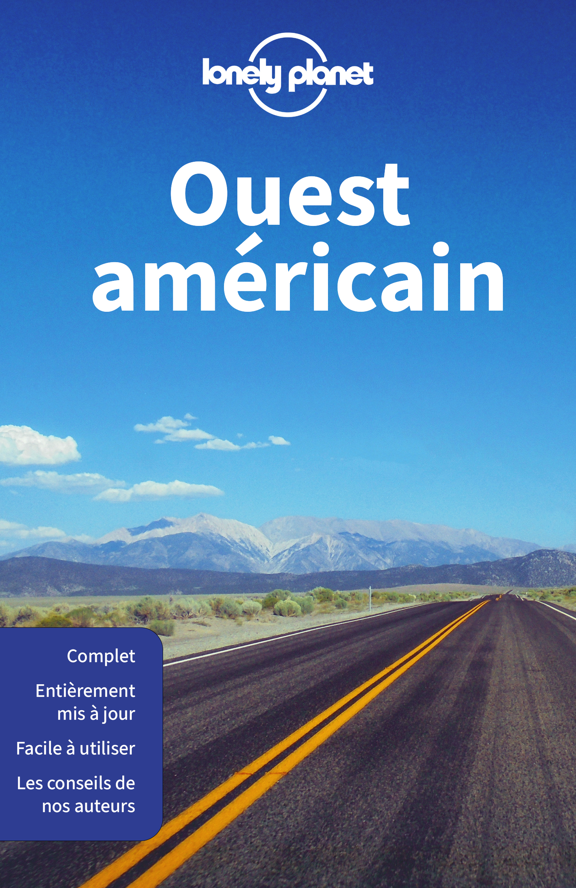
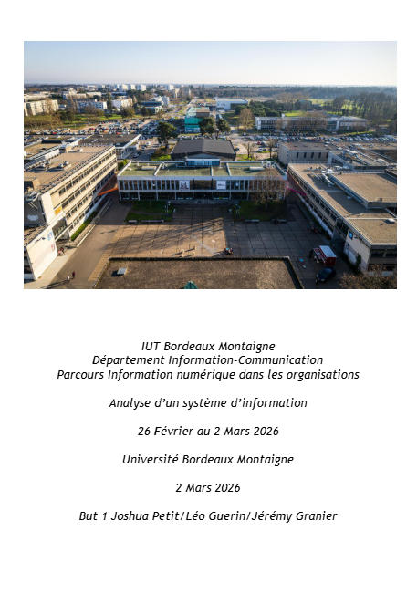

Mes Projets

Pub de parfum
Ce projet occupe une place particulière dans mon parcours. J'ai eu carte blanche pour réaliser une publicité factice pour le parfum de mon choix, ce qui m'a permis de laisser libre cours à mes idées et de tester mes propres choix artistiques. C'est à cette occasion que j'ai réellement accroché avec la photographie, un univers que j'ai découvert durant ma formation et qui me correspond énormément. Au-delà de la prise de vue, j'ai beaucoup appris sur la post-production et la retouche numérique via Adobe Photoshop.
Générique Peaky Blinders
Ce projet, réalisé dans le cadre d'un cours d'anglais, consistait à concevoir un générique à but parodique de la série Peaky Blinders. Ce défi m'a permis d'affiner ma créativité, ma technique de prise de vue ainsi que ma gestion du travail en équipe. La principale difficulté a résidé dans la narration : adapter l'univers visuel très marqué de la série originale à un ton parodique nous a obligés à faire des choix créatifs forts pour rester percutants tout en respectant les codes de l'œuvre initiale.
Autres Réalisations

Couverture Lonely Planet
L'objectif de ce projet était de reproduire à l'identique une couverture Lonely Planet sur Adobe Illustrator. Ce travail de précision m'a demandé de décortiquer une maquette professionnelle pour la reconstruire de A à Z, en respectant chaque détail au millimètre près.
Affiche chasse aux oeufs
Ce projet consistait à concevoir une affiche pour une chasse aux œufs de Pâques organisée au Jardin Public de Bordeaux. Réalisée sur Adobe Illustrator, l'idée était de créer un visuel ludique et coloré, en jouant sur des formes vectorielles simples et des typographies dynamiques pour capter l'attention des familles.

Analyse d'un système d'information
Réalisé en trio, ce projet consistait à analyser en profondeur le système d’information de l’Université Bordeaux Montaigne. Notre mission était de décortiquer les flux existants pour proposer des solutions d’optimisation concrètes. Ce travail a mobilisé nos capacités de diagnostic stratégique et de travail collaboratif pour imaginer un système plus fluide et mieux adapté aux besoins des utilisateurs.